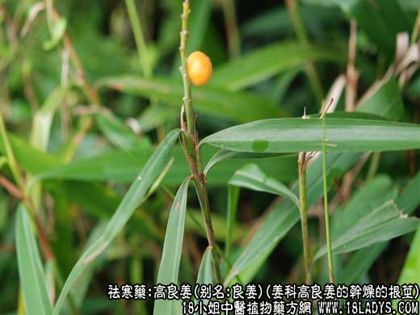
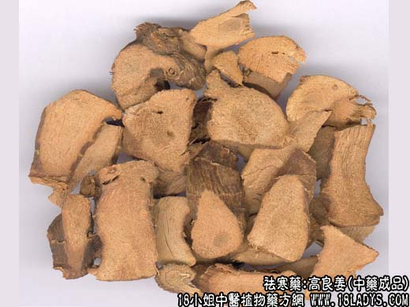
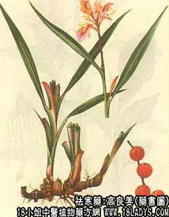

本品为较常用中药，《名义别录》列为中频。
别名：良姜，风姜（海南）、小良姜（广西）。
来源：本品为姜科多年生草本植物高良姜的干燥的根茎。多为栽培亦有野生。
产地：主产于广东省湛江，海南地区以及广西的北海、玉林等地区。
性状鉴别：本品呈圆柱形弯曲而多分歧，多切成约4～8厘米之段，直径约1～1.5厘米，表皮棕色有细纵皱纹和波状环节纹及须根残痕。质坚韧不易折断，断面淡棕色，粗糙，具纤维及粉性有芳香气，味辛辣。以红褐色，粗壮，坚实，味香辣者为佳。
主要成分：含挥发油，其中主要为1.8—桉叶素，又含黄酮类，其中主要为高良姜素。
功效与作用：与干姜相似，有祛寒、健胃和镇痛作用，但干姜祛寒力较大，良姜则镇痛作用较强。又体外试验对溶血性链球菌等有抗菌作用。
炮制：切片生用。
性味：辛、热。
归经：入脾胃经。
主治：畏寒作痛，呕吐噫气。
临床应用：1、用于胃脘寒痛。凡胃和十二指肠溃疡病、慢性胃炎等有胃部疼痛，口泛清涎、喜温喜按者都可用良姜，常配香附加强镇痛作用，方如良附丸；也可配肉桂、小茴香、延胡索等药。
使用注意：平素体虚者服高良姜时，不宜单用，因防其刺激性太大，宜与党参、白术同用以缓和其刺激性。
用量：1.5～6g。
处方举例：良附丸（《良方集腋》）：成药（含高良姜、香附），每服6g，开水送服。又可用散剂：高良姜7.5g，香附7.5g，研末，每服1.5g，每日三次，开水送服。
附1：大良姜
来源：为姜科多年生草本植物大高亮姜的根茎，均为野生。
产地：广东、广西、云南等省。
性状鉴别：药材的性状略与高良姜相似，但根茎较小良姜粗壮，多被纵切或斜切成两瓣。直径约1.5～3厘米，长约5～10厘米。表皮棕色，断切面淡粉色。亦有香辣味但不及良姜浓厚。功效与小良姜相似，品质稍次。
注：大良姜过去多供食品业作调味香料用。现京津均作药作。
附2：红豆寇
来源：又名红扣，山羌子。是大良姜的干燥果实。果实呈长圆形略如花生，长0.8～1.5厘米，直径0.7～1厘米。中腰略显细瘦，表皮黄棕色，光滑或皱缩，基部果柄痕为黄白色小圆凹，顶端有残留灰黄色或灰白色花柱基，长约3～5毫米。果皮薄易破碎，内面淡黄色。通常有种子六枚，被淡黄色膜质假种皮结连成一体。剥去膜衣可见棕色种子扁三角形，种皮坚硬内含白色种仁。气芳香味辛而刺舌喉。以颗粒饱满，气味辛辣者为佳。
效用：同良姜。